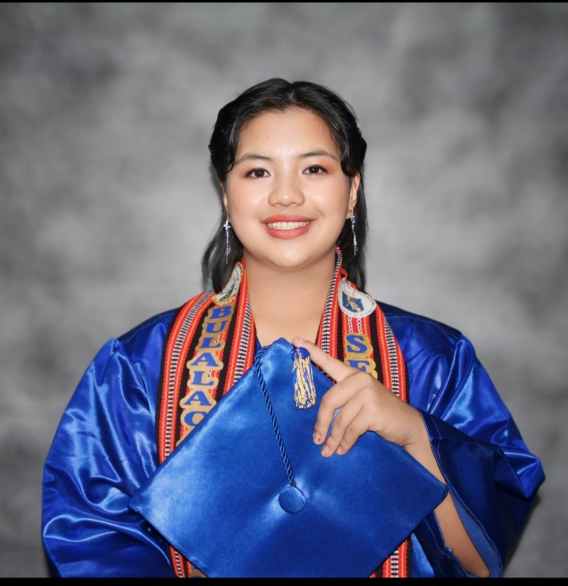

Karyll Vonn L. Kila-an

Objective:
Secure a responsible career opportunity where I can learn new skills, expand my knowledge and leverage my learnings.
Education:
- Secondary Education: Bulalacao National High School
Studied under Humanities and Social Science (HUMSS)
2018-2024
- Tertiary Education: King's College of the Philippines-
Studying Bachelor of Information Technology.
2024-ongoing
Work Experience:
- SPES Program Assistant |Mankayan Municipal Government Summer .
Skills:
- Social and Emotional Skillls
- Critical Thinking
- Time Management
Accomplishments:
- Assisted hospital staff by accurately updating and maintaining patient PhilHealth records, ensuring data integrity for seamless healthcare coverage processing.
Others:
Hobbies
Contact Details